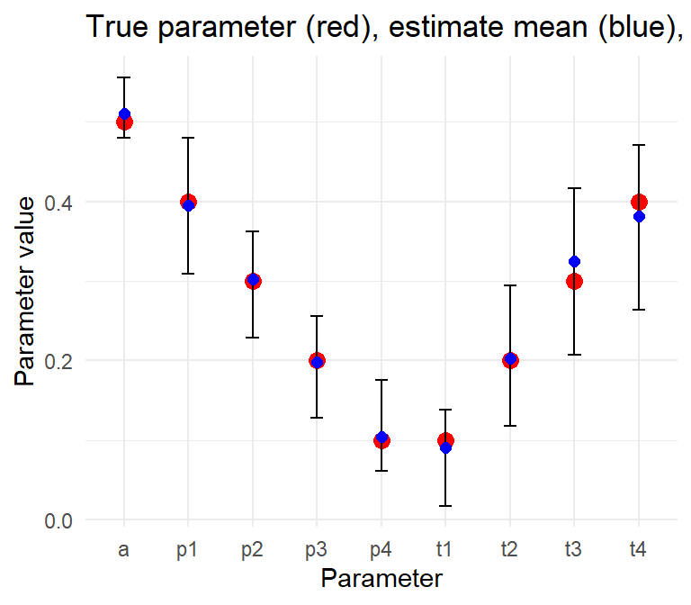

So far I’ve considered binary ratings, with the exception of the ML algorithms like MACE, which are designed for \(K\) categories. I downgraded those to binary during that discussion for simplicity. But let’s revisit this question, starting with the Fleiss kappa. You’ll recall that with binary ratings, for unbiased raters (\(t=p\)), we have \(\kappa = a^2\). The Fleiss kappa is defined for multinomial ratings, so might it be the case that the same relation holds in that case?
To get there, we have to re-imagine the t-a-p model in the case with \(K\) categories and \(k>2\). Instead of a binary latent truth \(T_i\), we can allow each subject take on values \(1 \dots K\) to indicate the true class. The corresponding probability \(t\) now becomes a probability distribution over the \(k\) values, so I’ll switch to boldface to indicate a vector. Accuracy need not be vectorized in the simplest case, but the random assignment rate \(p\) also needs to become a distribution.
With vectorized \(\boldsymbol{t}\) and \(\boldsymbol{p}\) the convention \(\bar{p} = 1-p\) no longer makes sense. Instead, I’ll use matrix multiplication, assuming column vectors. So the probability of two random classifications matching is \(\boldsymbol{p}^t\boldsymbol{p} = \sum_k{p_k^2}\) where \(p_k\) is the \(k\)th element of the vector \(\boldsymbol{p}\), and the \(t\) superscript means transpose from column to row vector to make a dot product.
Recall that kappas are based on match rates using a formula that’s agnostic to \(K\). For two ratings to match, two raters \(j_1,j_2\) of the same subject \(i\) must agree in their assignment of either Class 1 or Class 0 classifications. In other words, the binary random variables must agree: \(C_{ij_1} = C_{ij_2}\), which now may be an integer 1 to \(K\). A generic formula that includes the most common kappas is
\[
\kappa = \frac{m_o - m_c}{1 - m_c},
\] where \(m_o\) is the observed proportion of agreements and \(m_c\) is the expected proportion of agreements under chance. The assumption about \(m_c\) is a defining feature of the various kappa statistics.
Consider two raters classifying an observation into \(K\) categories. In the t-a-p model we can express the expected value of observed matches \(m_o\) as the sum of three kinds of agreement: (1) \(m_a\) is when both raters are accurate (and hence agree), (2) \(m_i\) when both raters are inaccurate (guessing) and agree, and (3) \(m_x\) is the mixed case when one rater is accurate and the other is inaccurate but they agree. The second two of these have expressions that include the guessing rate \(m_c\). Following that thinking we have the following expectations for rates:
For \(m_a\), both ratings must be accurate, in which case they automatically agree. For \(m_i\), both must be inaccurate (probability \(\bar{a}^2\)) and then match randomly (probability \(m_r\)). For \(m_x\), one rater must be accurate and the other inaccurate, in which case they agree if the accurate rater chooses the category that the inaccurate rater guesses.
2 Unbiased Raters: the Fleiss Kappa
Recall that in terms of the t-a-p model, the Fleiss kappa assumes that the by-chance match rate in the kappa formula comes from the observed rate of each category. Random matches are assumed to have the same distribution as the overall ratings distribution. In the vectorized t-a-p model, this amounts to finding \(\boldsymbol{c} = \boldsymbol{t}a + \bar{a}\boldsymbol{p}\), and the by-chance match rate in the kappa formula is \(m_c = \boldsymbol{c}^t\boldsymbol{c}\). Under the unbiased rater assumption, where \(\boldsymbol{p} = \boldsymbol{t}\) after a bit of algebra we get \(m_c = \boldsymbol{p}^t \boldsymbol{p} = m_r\).
With vectorized truth and randomness, the math looks just like the binary case, and we get the same result: when the \(\boldsymbol{p} = \boldsymbol{t}\) condition is met, kappa is the square of accuracy. This is a nice result, because it gives us a direct way to check multinomial solvers that use unbiased simulated ratings with multiple categories.
3 Likelihood
The likelihood function for the multinomial case is similar to the binary case. The difference is in the sum, which is over each class. We have
where the leftmost product is over subjects, and the sum is over the \(K\) classes, where we pull subject \(i\)’s truth estimates \(\boldsymbol{t}\) and extract the elements one by one. The innermost product is over all the ratings, indexed by the rater \(j\), the assigned rating \(k_{ij}\) and each possible true Class \(k_T\). The rater likelihood is
\[
\begin{aligned}
\pi_{k_Tk_{ij}}^{(j)} &= \text{Pr(assigned rating = }k_{ij}\text{; true class = }k_T) \\
&= \bar{a}_jp_{k_T}^{(j)} + a_jI(k_j = k_T).
\end{aligned}
\] Here, \(I\) is an indicator function that is one when the assigned rating equals the assumed true rating, and zero otherwise.
In practice, we compute the log likelihood, and I’ll use the same approach as the binary case, adapted to \(K\) classes. Instead of log likelihood as bits per rating, using base 1/2, it is “krits” per rating, short for k-ary digit. Using log base \(1/K\) and averaging over ratings again gives us a range of entropy in [0,1]. When \(a=1\) the ratings are deterministic (no randomness) and the entropy is zero. For uniform \(\boldsymbol{p}\) and \(\boldsymbol{t}\) with \(a=0\), entropy is 1 krit/rating. See the code sample below for an example.
Code
library(tidyverse)library(tapModel)# zero accuracy case with the correct modelgenerate_sample_ratings_cat(N_s =200, N_r =10, K =4, params =list(t =rep(.25,4),a =0,p =rep(.25, 4))) |>krits_per_rating_cat() # = 1# a = 1 case, using fit_ratings_cat() to impute good t valuesgenerate_sample_ratings_cat(N_s =200, N_r =10, K =4, params =list(t =rep(.25,4),a =1,p =rep(.25, 4)),details =TRUE) |>fit_ratings_cat() |>krits_per_rating_cat() # = 0
We can express the log likelihood \(\ell\) compactly in vector form with
\[
\begin{aligned}
\ell(\text{ratings; parameters}) &= -\sum_{i=1}^{N_s} \| \log \boldsymbol{t}_i +
\sum_j \boldsymbol{\pi}_j \|_1
\end{aligned}
\] where each subject \(i\) has a vector \(\boldsymbol{t}_i\) of estimated class probabilities, and each rater \(j\) has a vector \(\boldsymbol{\pi}_j\) of conditional class probabilities based on the rating of that subject. All the logs are non-positive, so the norm and minus sign are a notation hack that just means “add up the vector components.”
4 Units of Entropy
For binary ratings I adopted the convention of finding the average log likelihood per rating and using log base 1/2, so the answer is in bits. Here we only need to switch to log base 1/K to have the same benefits.
Note
In the K-class case I will use the convention that \(\log x\) means \(\log_{\frac{1}{K} } x\), without specifying the base each time. I nominate “krits” (for “k-ary digits”) as the unit of entropy, following Tukey’s bits, trits, and dits. As with the binary case when we maximize likelihood, we minimize the number of informational krits per rating.
As with the binary case, we can estimate log likelihood from parameters by assuming that the probabilities \(t_i\) closely approximate indicator vectors. These “one-hot” vectors like \((1, 0, 0)\) or \((0,1,0)\) exactly identify a single class for each subject. In that case, the sum in Equation 2 collapses to a single value of \(t_{k_T}\) for each subject. In the \(K=3\) case it looks like
where the products are over all ratings \(k_{ij}\) sorted by the true class as indicated by the \(\boldsymbol{t}_i\) vectors. I’ll approximate further by assuming an average model with parameters \(boldsymbol{t}\) representing the proportions of true classes over all subjects, a constant rater accuracy \(a\), a constant random assignment rate \(boldsymbol{p}\).
The key insight is that \(\pi_{1k_T}\) is expected to occur at a rate of \(\pi_{1k_T}\), since that’s it’s definition. There will be \(Nt_1\pi_{1k}\) contributions of \(\log \pi_{1k}\) in the log likelihood sum, on average.
Taking logs, we have an expectation averaged over \(N\) ratings of
The inner sum has the form of Shannon entropy, which represents the average krits per rating for each assigned class \(k = 1 \dots K\). The total entropy per rating is the weighted average of these using true class rates as weights. Note that the expected entropy only depends on a model specification, not any actual ratings, and it would only be relevant to ratings generated from that model.
If we set all the components of \(\boldsymbol{t}\) to \(1/K\), we obtain a kind of standardized rater entropy that’s independent of sampling subjects.
Code
K <-4t_p <-tribble(~run, ~t, ~p,1, c(.1,.1,.4,.4), c(.1,.1,.4,.4), # skewed, unbiased2, c(.1,.1,.4,.4), c(.4,.4,.1,.1), # skewed, biased3, rep(.25, 4), rep(.25, 4)) # uniform, unbiasedoutput <-data.frame(a =seq(0,1,.05), LL =NA, E_LL =NA) |>cross_join(t_p)for(i in1:nrow(output)){ params <-list(t =unlist(output$t[i]), a = output$a[i], p =unlist(output$p[i]))# simulate data cat_ratings <-generate_sample_ratings_cat(N_s =100, K = K, params = params, details =TRUE)# replace subject t with indicator of true value cat_ratings$subjects <- cat_ratings$subjects |>mutate(t =lc_indicator(T_i, K)) |>select(-T_i)# use the average t-a-p params used to generate the data as hierarchical # values for raters, and estimate from that the t_i values for each # subject.#cat_ratings <- cat_ratings |> # e_m_step_cat(group = FALSE)# store results output$LL[i] <-krits_per_rating_cat(cat_ratings) output$E_LL[i] <-expected_krits_per_rating_cat(params)}output %>%gather(type, value, LL, E_LL) %>%mutate(model =str_c(run),type =recode(type, LL ="Empirical",E_LL ="Expected"), # nice legend labelstype =factor(type, levels =c("Empirical", "Expected")) ) %>%ggplot(aes(x = a, y = value, color = model, group =interaction(model, type),linetype = type)) +geom_line() +theme_bw() +ylab("Krits per rating")
Figure 1: Log likelihood in krits per rating for three sets of parameters, with 100 samples and five raters. The dotted lines are the expected values and the solid lines are the empirical ones, which have sampling noise. Parameter sets are 1 = skewed, unbiased, 2 = skewed, biased, 3 = uniform, unbiased.
In Figure 1 the rater models each have fixed parameters with \(a\) varying to show the effect of changing accuracy. The other parameters are
Model 1: \(\boldsymbol{t} = (.1,.1,.4,.4), \boldsymbol{p} = (.1,.1,.4,.4)\)
Model 2: \(\boldsymbol{t} = (.1,.1,.4,.4), \boldsymbol{p} = (.4,.4,.1,.1)\)
Model 3: \(\boldsymbol{t} = (.25,.25,.25,.25), \boldsymbol{p} = (.25,.25,.25,.25)\),
so models 1 and 3 have the \(\boldsymbol{t} = \boldsymbol{p}\) property, which we called unbiasedness. The variation in the solid lines comes from sampling, so that the empirical class rates don’t exactly match the model specifications. We can see in model 2 that maximum likelihood in krits per rating doesn’t always occur when \(a = 0\).
5 E-M Algorithm
As with the binary case, we can estimate model parameters from ratings data using a two-step iterative process called an Expectation-Maximization algorithm. The E-step of the multinomial case looks like the binary case, just with more classes. The likelihood contribution for a single subject \(i\) is
\[
\begin{aligned}
\text{Pr(ratings; parameters, subject }i) &= \sum_{k_T = 1}^Kt_{k_T}^{(i)}\prod_{j}\pi_{k_Tk_{ij}}^{(j)} \, ,
\end{aligned}
\] from which we extract new estimates of class probabilities via
$$ where it is understood that we’re referring to subject \(i\), so I have removed those annotations. The \(t_{k_t}^*\) result on the left is the updated class probability that subject \(i\) is class \(k_T \, \epsilon \{1 \dots K\}\).
As with the binary case, we think of \(t_{k_T}\) as the prior distribution on \(\boldsymbol{t}\) for this step. The two obvious choices for the prior are the average class probabilities as estimated at the current stage, or the per-subject class probabilities. I haven’t done extensive tests, but the average probabilities seem to outperform the per-subject ones. This is probably because even with a modest number of raters per subject, the individual probabilities quickly head toward zero or one, so these estimates would become very strong priors. Using the average class probabilities allows more influence from the rater probabilities.
To derive the M-step of the algorithm we need to expand the 2x2 confusion matrix to KxK. The matrix consists of probabilities, where the \(i,j\) entry contains \(Pr(\text{Rating = }j | \text{True class }= i)\). Confusion matrices are sometimes row-normalized, but this one is not; it’s the intersection of true class values (rows) with rated classes (columns). The empirical matrix comprises the proportions of ratings that fall within each of these groups, which enables us to compare a model with a data set. I’ll illustrate with the \(K=3\) case, where the model’s expected value of these proportions is
\[
E[C] =
\begin{bmatrix}
t_1(a + \bar{a}p_1) & t_1\bar{a}p_2 & t_1\bar{a}p_3 \\
t_2\bar{a}p_1 & t_2(a + \bar{a}p_2) & t_2\bar{a}p_3 \\
t_3\bar{a}p_1 & t_3\bar{a}p_2 & t_3(a + \bar{a}p_3)
\end{bmatrix} .
\] Here, \(\boldsymbol{t} = (t_1, t_2, t_3)\) are the class probabilities. The empirical \(\hat{C}\) we get from the ratings combined with the estimated class probabilities \(\boldsymbol{\hat{t}}\) obtained in the E-step along with some proposed values of \(a\) and \(\boldsymbol{p}\).
To solve for the parameters and get better estimates, we can start with the sum of the diagonals (the trace of the matrix), to get
\[
\begin{aligned}
\text{trace}(E[C]) &= t_1(a + \bar{a}p_1) + t_2(a + \bar{a}p_2) + t_3(a + \bar{a}p_3) \\
&= a(t_1 + t_2 + t_3) + \bar{a}(t_1p_1+ t_2p_2+t_3p_3) \\
&= a + \bar{a}\boldsymbol{t}^t\boldsymbol{p} \\
& \approx \text{trace}(\hat{C}) ,
\end{aligned}
\] which gives us one equation linking the model to the data. We can sum the off-diagonal columns to get similar equations relating to the components of \(\boldsymbol{p}\). For the first column, we have
\[
\begin{aligned}
E[c_{21} + c_{31}] &= t_2\bar{a}p_1 + t_3\bar{a}p_1 \\
&= \bar{t}_1\bar{a}p_1 \\
& \approx \hat{c}_{21} + \hat{c}_{31} \\
&:= \hat{C}_{o1},
\end{aligned}
\] where in the definition in the last step the o means “off-diagonal”, and the 1 means sum over column 1. Recall that we already have estimates for \(\boldsymbol{t}\) at this point, and wish to solve for \(a\) and \(\boldsymbol{p}\). If we sum the three off-diagonals we obtain \(\bar{a}-\bar{a}\boldsymbol{t}^t\boldsymbol{p} = 1 -\text{trace}(E[C])\), since all the elements of \(C\) sum to 1.
Solving each of the off-diagonal sums for \(p_i\) gives us a way to combine with the trace equation and solve for \(a\). Start with \(p_1 \approx \hat{C}_{o1}/(\bar{t}_1\bar{a})\) and substitute to obtain
The formula for \(a\) gives us some insight into the t-a-p model. When \(a=1\) the ratings will match true values, so the matrix will be diagonal with values \(\boldsymbol{t}\). When \(a = 0\) we get the outer product \(C = \boldsymbol{t}\boldsymbol{p}^t\).
6 Estimating Parameters
A \(K=4\) estimation example is shown below, where 20 data sets are simulated from the same parameters, then solved with tapModel::fit_ratings_cat().
Code
set.seed(123)# true parameterstrue_t <-c(.1, .2, .3, .4)true_a <- .5true_p <-c(.4, .3, .2, .1)# number of replicationsn_iter <-20results <-map_dfr(1:n_iter, function(rep) {# generate ratings cat_ratings <-generate_sample_ratings_cat(N_s =100, N_r =5, K =4,params =list(t = true_t, a = true_a, p = true_p),details =FALSE )# estimate parameters avg_params <- cat_ratings |>fit_counts_cat()tibble(rep = rep,param =c(paste0("t", 1:4), "a", paste0("p", 1:4)),true =c(true_t, true_a, true_p),est =c(avg_params$t, avg_params$a, avg_params$p) )})# reshape for plottingplot_data <- results %>%group_by(param) %>%summarize(true =first(true),est_min =min(est),est_max =max(est),est_mean =mean(est),.groups ="drop" )# plot true values vs estimation rangesggplot(plot_data, aes(x = param, y = true)) +geom_point(color ="red", size =3) +geom_errorbar(aes(ymin = est_min, ymax = est_max), width =0.2) +geom_point(aes(y = est_mean), color ="blue", size =2) +theme_minimal() +labs(y ="Parameter value",x ="Parameter",title ="True parameter (red), estimate mean (blue), and range (error bars)" )

Figure 2: Simulated ratings and solutions for 100 subjects, 5 raters, 4 categories, with t = (.1,.2,.3,.4), a = .5, and p = (.4,.3,.2,.1).
The E-M algorithm is able to recover the coefficients reasonably well here.